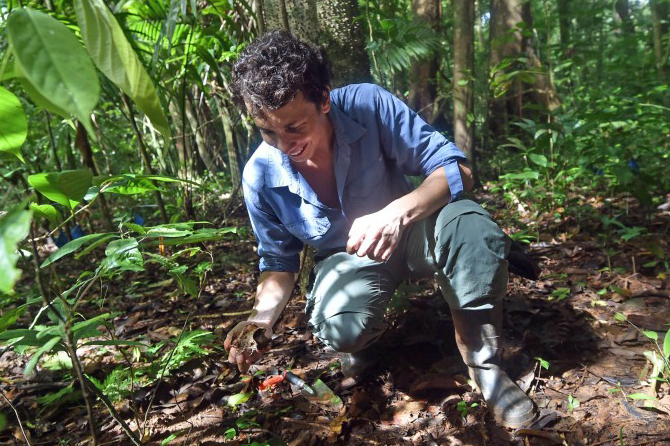
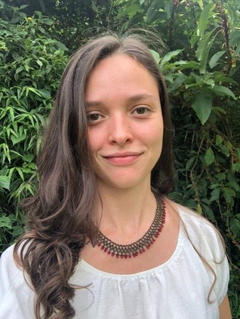
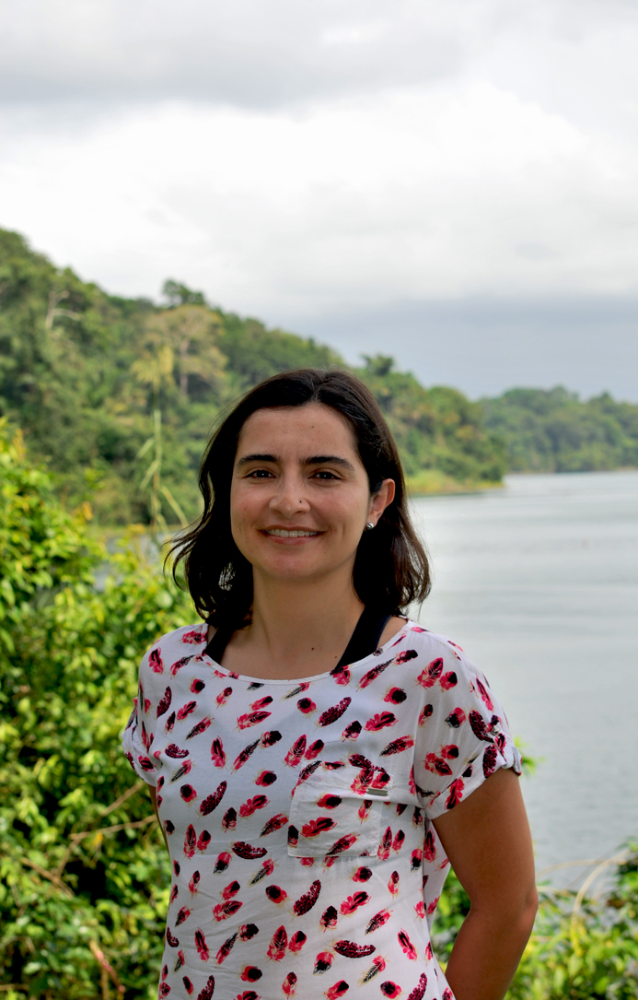

Current Lab Members
Dr. Paul-Camilo Zalamea
Principal Investigator

I am a tropical plant community ecologist working at the interface of plant-microbial dynamics. My research integrates large-scale field, greenhouse, and laboratory experiments with molecular techniques to address questions fundamental to understanding the distribution and maintenance of biodiversity in tropical forests. I completed my undergraduate degree in Biology at Universidad de los Andes in Colombia, I did a Masters at the same university and then I obtained my Ph.D. in a joint program between Université Montpellier in France, and Universidad de Los Andes. After, I joined the scientific community at the Smithsonian Tropical Research Institute in Panama, where I had two postdoctoral appointments.
Gabriela Quesada-Ávila
PhD Student

I am a biologist and tropical ecologist graduated from the National University of Costa Rica. I am currently pursuing a PhD in Integrative Biology at the University of South Florida in Tampa, where I am part of Dr. Paul-Camilo Zalamea's research team. Dr. Zalamea's lab specializes in the ecology of plants and microorganisms in tropical forests, a field that closely aligns with my research interests. My main area of interest is tropical forest ecology, with a particular focus on the interactions between plants, soil, and microorganisms. I am deeply fascinated by how these relationships affect community and ecosystem dynamics and how they influence plant adaptation and survival in the face of the current climate crisis. Currently, my research focuses on the study of seeds and germination of various tropical tree species of Panama, in order to evaluate their response to elevated temperatures and the complex interactions with fungi present in the soil.
Clare Mann
Master's Student

I am a first-year master's student with an interest in plant-fungal interactions in tropical ecosystems. I am fascinated by the impressive plant diversity found in tropical regions, and my research will explore the role of fungal pathogens in maintaining genetic diversity within plant populations. I hope to contribute to our knowledge of these systems and interactions and ultimately apply these findings to advocate for forest protection and restoration.
Carolina Sarmiento
Research Associate

I am a tropical microbial ecologist, broadly interested in plant-fungal interactions. I work part-time at the Zalamea lab as a research associate and I am also currently working in science education, at Amgen Biotech Experience.
Alumni
- Lindsay McCulloch, Postdoc, 2023 - 2025. Currently Assistant Professor of Teaching at UC Riverside.
- Nathali Jimenez, MSc, 2025
- Daniella Fuller, MSc, 2025. Currently Adjunct Instructor at University of South Florida.
- Sofia Ocampo, MSc, 2025
- Daniela Varon-Garcia, MSc, 2024. Currently Science Teacher at Union Park Charter Academy.